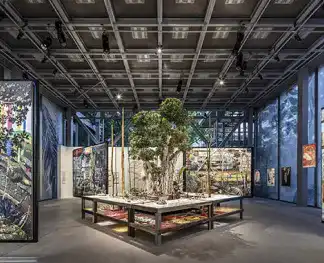
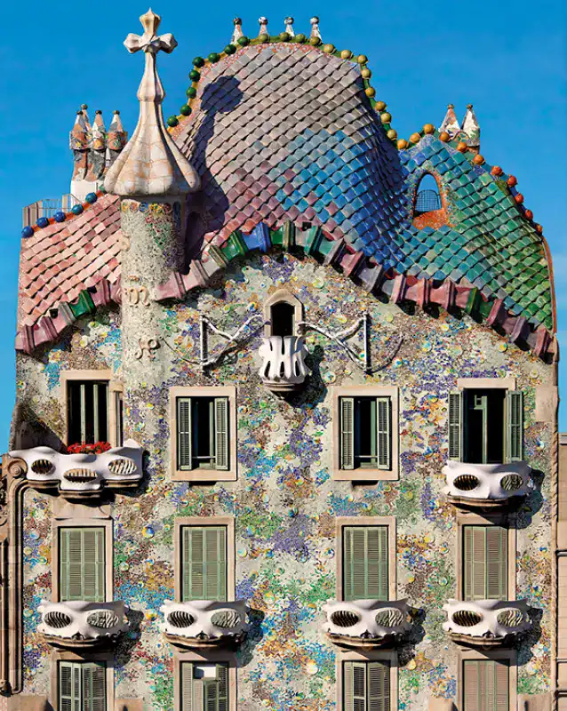

This is a Heading
Notre nouvelle exposition temporaire du 13 avril au 23 juin 2024 sera sur le Gaudíisme .
Retrouvez toutes les informations ici !

Le Gaudíisme
Le Gaudíisme incarne la singularité de la vision architecturale d'Antoni Gaudí.

Informations
Retrouver toutes les informations à propos de notre exposition temporaire sur le Gaudíisme!

Billeterie
Achetez vos place pour l’exposition ici.
Oeuvres à découvrir !

Sagrada Família
1883 - 1926
LIRE LA SUITE

Parc Güell
1900 - 1914

Casa Batlló
1904 - 1906
LIRE LA SUITE

Casa Milà
1906 - 1910
LIRE LA SUITE

Palau Güell
1885 - 1890
LIRE LA SUITE